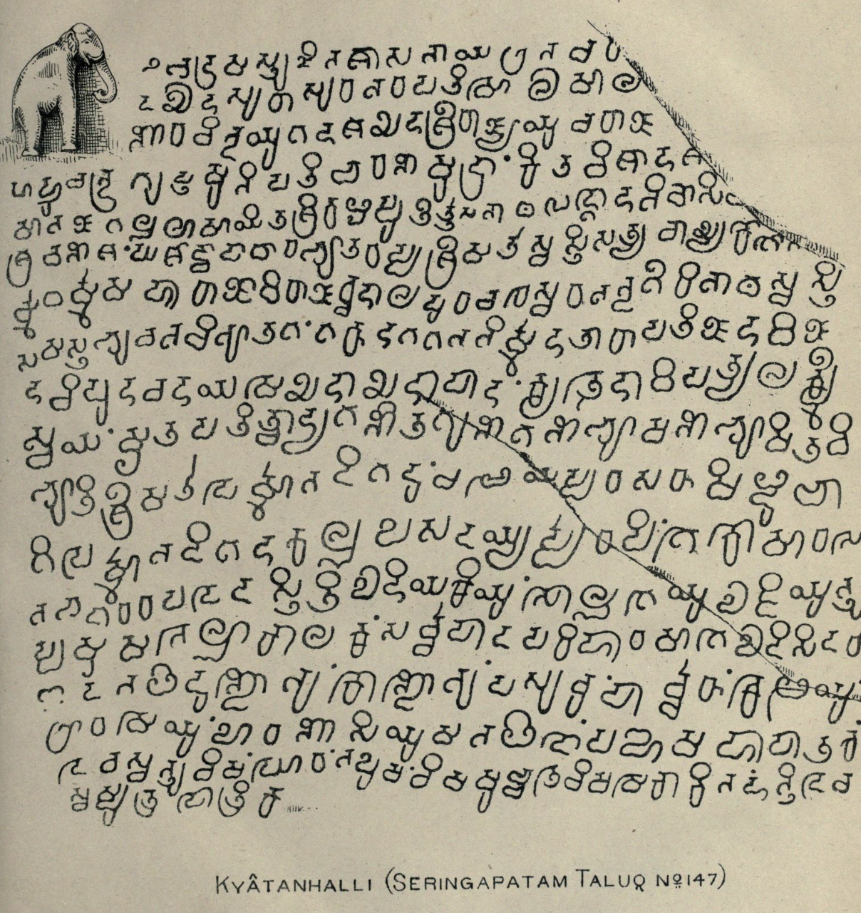
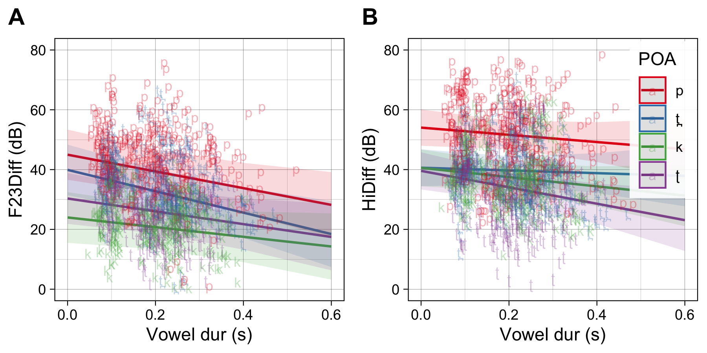

The current project is one of 2 or 3 studies I’m working on having to do with solving the problem of debuccalization in Old Kannada, where Old Tamil p→h. The oldest documented occurrance of this change is found in a 10th C. inscription from Srirangapatnam [910 AD: “…lōkakke hōhan” (for pōpan?)] (Narasimhia, 1941 p. 13; Epigraphia Carnatica III, Seringapatam Taluq, 134)
The question is why this happens. There are two hypotheses about the origin of this change:
Subbaiya, K.V. (Indian Antiquary, 1909, p.197) suggests that the change results from contact with Marathi, which sees a similar (though limited) change of bh > h. But there are problems with this hypothesis–we would expect evidence of the change to be geographically predictable, but this is not what we see. The first evidence of change is in the southern Kannada-speaking region.
The other, perhaps related explanation, is a phonological one proposed by Tuttle, E.H. (1929) (American Journal of Philology, 50, 2, pp.138-155). Tuttle suggests that the change from p > h is related to a another change occurring in Kannada around the same time (9th C), v > b. The argument runs that there is phonological pressure on p to be made more distinct from the newly introduced b. As the production of p and b are very similar (especially in onsets), p becomes aspirated as [\(p^h\)]. From aspirated p, Tuttle suggests a path to [f] then [h].
The typical path for this sort of debuccalization change is that p→f→h. The problem is that there is no evidence of an f stage in the change in Kannada. We might expect some sort of accommodation of \(p^h\) in the inscriptional evidence, but this is not what we find, rather simply a whole sale replacement of p with h. Of course absence of evidence is not evidence of absence, but I want to propose an alternative explanation.
My theory is that there is internal phonetic/perceptual pressure affecting this change. Narayan (2022/23) shows that the burst characteristics of p in Tamil, which does not contrast voicing in word-initial position and has very short VOT, are low amplitude (relative to the amplitude of the vowel).

My hypothesis is that low amplitude bursts are potentially not heard
and confusable with h. The thinking is that Old Kannada, which already
had h- (from Sanskrit borrowings), is confusable with low amplitude p
bursts.
The Phonological pressure study directly examines Tuttle’s claim that v > b forces p > [\(p^h\)] (which ultimately leads to debuccalization). In this task, Tamil-speaking subjects learn a new word for a nonsense lexical item that results in a minimal pair with a Tamil word. The new word starts with [b-] (which is really the p-initial Tamil word with maniuplated VOT and F0 characteristics). For example: [baḻam] New word ~ [paḻam] “fruit”. Subjects are then asked to produce both words as if instructing a new Tamil speaker. They do this in two noise conditions, hopefully inducing clear speech behavior.
If subjects behave according to Tuttle, we would expect them to disambiguate the new minimal pair by aspirating (to some degree relative to baseline productions) their [p-] native Tamil word. [I do not think this will happen!]
The other possibility is the speakers “strengthen” the new word by producing it with longer negative VOT. [I think this will happen.]
Provided speakers do not aspirate their [p-], my hypothesis is that there is internal acoustic-perceptual pressure which affects the debuccalization, namely, that [p-] bursts are quiet enough to be misheard. The second experiment compares the discriminability of various place-of-articulation contrasts from Tamil: p, t̪ ,ʈ,k,and h. We are specifically targeting the discriminability of p vs. h against t̪ ,ʈ,k vs. h.
We will do an AX task for each pair of places of articulation in three SNR conditions. The prediction is the p-h will have a SDT d’ score lower than t̪-h and ʈ-h and k-h, i.e., p-h is less discriminable than other combinations as evidenced by a low d’ in noise conditions.